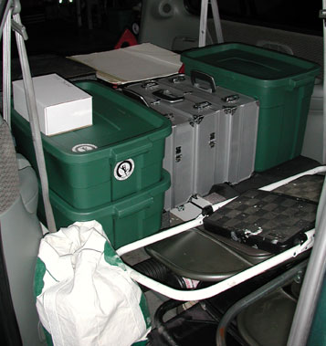
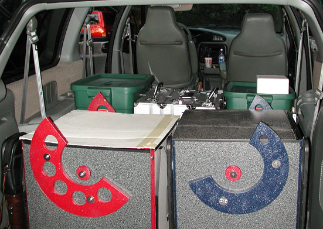

SJAA Ephemeris June 2001 |
SJAA Home |
Contents |
Previous |
Next
SJAA Ephemeris June 2001 |
SJAA Home |
Contents |
Previous |
Next
Be Prepared for Summer Observing
Morris Jones
Jane and I spent our fall and winter doing mostly casual sidewalk astronomy and observing the giant planets. When the spring temperatures started to warm and the clouds parted, we were itching to spend some time alone under a dark sky hunting down the faint fuzzies we love to see.
Jane and Mojo's van loaded for an evening of deep sky observing. Note the storage containers to help use vertical space. Photo by the author.
|

|
Going out for serious observing takes a little practice. Many of us have had (or will have!) the experience of driving an hour or more to a favorite dark sky location, only to discover that some essential piece of equipment was left at home. Where is the eyepiece case? Did I really leave the drive battery plugged into the charger? How could I forget to bring pencils? Where is my favorite observing list?
Jane and I were so excited to find a good observing site near our home in the North Bay that we made four consecutive weeknight observing excursions in April. It was heavenly! But after two evenings of leaving one thing or another behind, I decided it was time to deal with the issue.
Astronomical equipment inventories grow with time spent in the hobby. Very soon the list grows beyond anyone's ability to recall on demand every piece of equipment or supplies.
Can you name the fifty states from memory? Most people can name about forty-seven on demand. It doesn't take very long before an observing session equipment list grows that large or larger. It's perfectly normal to forget one or two items on occasion!
One way to assist your preparation memory is to compartmentalize the objects being remembered. For instance, it's easier to recall the contents of one equipment case at a time, or one designated container for supplies, than to remember the contents of all the containers. The typical maximum for easily remembered lists seems to be about five items. If you can remember five containers, that each have five sections, that each hold five objects, you stand an excellent chance of remembering everything. (It's much easier to remember an area code, prefix, and number, than ten random digits!)
But the best preparation tool for complex activities (like amateur astronomy away from home) is the checklist. Checklists are a time-honored tool for all complex endeavours, from camping or hiking to flying to the moon.
Checklists have to be built and tested in an iterative process. For the same reason it's hard to remember the fifty states, it's difficult to write a perfect checklist from scratch. Once you've made a start, keep your checklist handy and be ready to add to it as you test it.
I would love to be able to publish a generic observing session checklist, but there is a huge variety in astronomical equipment and comfort needs. Everyone's list will be different. Nevertheless, I think it would be useful to read other observer's checklists, just to be able to say, "Hey, that's a good idea!"
Here are some excerpts from our checklist. The full list can be found here:
http://www.whiteoaks.com/mojo/obslist.html
Telescopes
- 17.5" Litebox
- Mirror (incl. digital thermometer)
- Body (incl. shroud)
- Truss poles
- Equipment box:
- Telrad
- Springs
- Nut driver
- Finder scope
- Knob box
- (incl. knobs, small and large collimation wrenches)
- A-P Traveler
- OTA case:
- OTA with mount adapter
- Telrad
- 2" Diagonal
- Focus extender
- Allen wrenches
- GP mount case:
- GP mount
- (incl. tripod, head, alignment scope covers)
- Hand controller
- (incl. 12V plug)
- Polar scope light
- Anti-vibration pads
- 12V Battery, charged
- Counterweight assembly
Common accessories
- Favorite eyepieces
- 22 Panoptic
- 16 Nagler
- [etc.]
- Collimation tools:
- Laser collimator
- Cheshire eyepiece
- Red-filtered Mag-lite
- Filters:
Documents
- Jane's Box
- Night Sky Observer's Guide
- Millenium Star Atlas
- Herald-Bobroff Atlas
- RASC Observer's Handbook
- Sketching supplies (incl. pad, pencils, sharpener, erasers, smudge tools)
- Clipboard
- Planet satellite finders,
- red spot schedule,
- Jupiter moon events
- Pencils
- Misc. project clippings
- Mojo's Box
- Reading glasses
- Night Sky Observer's Guide
- Uranometria v. 1 & 2
- Edmund's Mag 6 Atlas
- RASC Observer's Handbook
- Steno pad observing log
- Dixon Sensematic pencils
- Satellite schedules
- Minor planet finders
Clothing
- Jane
- Warm hat
- Gloves
- Coat
- Sweatshirt
- Thermal pants
- Thermal shirt
- Warm boots
- Scarf
- Mojo
- Thermal pants
- Turtle neck warm shirt
- Columbia jacket
- Warm soft hat
- Fingerless gloves
Support Hardware
- 2 Skylite flashlights
- Yellow right-angle red light
- Misc. LED flashlights
- Batteries (mininum quantities):
- AA cells (20)
- C cells (6)
- 9V cells (3)
- 9x63 binoculars
- 7x50 binoculars
- 2 tables
- Ladders for each telescope
- Folding chair for chart table
- Reclining chair for observing
- Ground mats for telescopes (e.g., carpet remnants)
- Pocket knives
- Adjustable observing chair
Food & Medicine
- Water
- Coffee thermos
- Non-spill coffee mugs
- Rodney Strong Cabernet Sauvignon
- Wine bottle opener
- Wine cups
- Nuts, crackers, cheese, peanut btr
- Spoons, forks
- Bug repellant
- Sunscreen
- Band-aids
- Neosporin
- Pepcid AC & Tums
- Allegra or Claritin
- Ibuprofen
- Tylenol
- Aspirin
Ready to go with the 17" and 14" Liteboxes packed side-by-side. Photo by the author.
|

|
Mail to:
Morris Jones
Copyright © 2001 San Jose Astronomical Association
Last updated:
February 05, 2002
Previous | Contents | Next